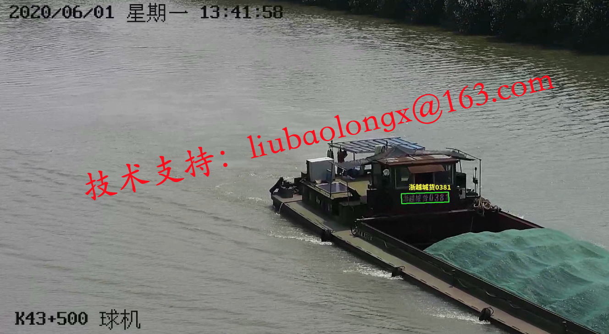
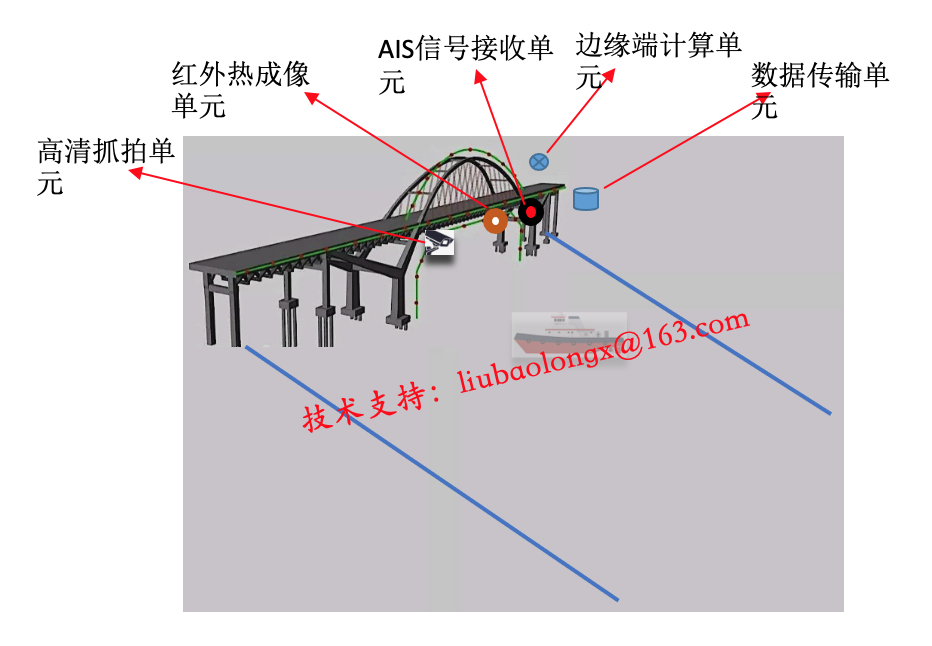
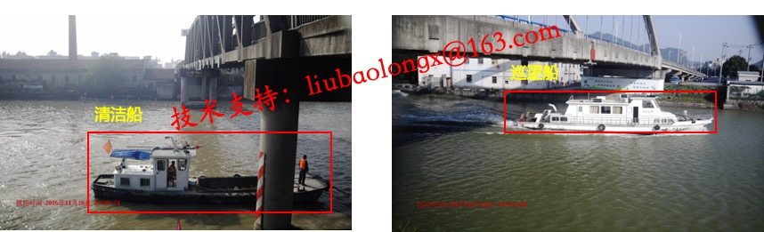

个人介绍
刘宝龙，男，计算机科学与技术工学博士，毕业于浙江大学，浙江工商大学计算机与信息工程学院教师。任中国计算机学会会员，中国图学学会高级会员、可视化与认知计算专委会委员，杭州市高层次人才。主要研究方向为水路智能交通、自然场景文本识别、计算机视觉、深度学习。以第一作者或唯一通讯作者在IEEE ITSM、ACM TOMM和《计算机辅助设计与图形学学报》等国内外著名学术期刊和会议发表SCI、EI检索论文10余篇，申请发明专利10余项，主持或参与国家重点研发计划项目、国家自然科学基金、浙江省自然科学基金和部属重点实验室开放课题等科研项目4项。担任IEEE TNNLS、FITEE等国际期刊审稿人。刘博士具有丰富的工业落地应用项目经验，曾任阿里巴巴集团人工智能方面的算法专家，研发的多项算法和技术系统已经在多个实用场景及产品落地应用，相关技术申请发明专利多项。
水路智能交通监管与执法稽查
刘博士在人工智能视觉感知的水路智能交通技术研究和应用落地方面经验丰富，他的博士论文是第一篇较为系统地研究基于视觉智能的船名标识字符检测与识别的博士论文，该博士论文公开发表以来累计被下载近5000次，被引用近50次。围绕该方向坚持研究相关技术多年，先后研发了基于可见光图像的船舶检测、船舶分类、船牌识别、船脸识别和船舶追踪检索算法与系统，还在基于红外图像的船舶检测、船舶分割、船舶追踪等技术方面有积淀。当前，积累了大量船舶精细化标注数据集，用以进行算法的训练与迭代。相关技术先后以国际著名期刊和会议论文、发明专利等形式进行了公开和知识产权保护，并完成了该领域科研基金的研究。同时，围绕水路交通智能化，与全国多家企业及单位展开了落地合作，相关技术已经应用于不同省份的不同河道与卡口，取得了良好的应用效果。
船脸识别实景识别效果
通过部署多种感知设备，对特定卡口进行视频监控、红外成像、AIS信号等信息全面采集；基于自研先进人工智能算法及技术，对多设备多源信息进行快速计算处理，以获取船名、船型、航向、船员、AIS及其他高维特征信息，完成高精度船脸识别；运用智能挖掘分析技术，完成船舶抓拍、疑似超载、未挂国旗、未船救生衣、污损船名和污染检测等违法行为判别，助力智能化执法处罚。
水路智能交通监管与执法稽查解决方案示意图
船舶分类实景识别效果
船脸识别部分论文